Latest version: 0.6.0
This guide was created to allow anyone to deploy a Regen node without any difficulties.
Requirements:
- At least 8 Gb of RAM
- Min. 4-thread processor
- 200 GB SSD
0. Buying a server
As a first step we need to rent a server (VPS). I recommend Vultr.com.
Registation
Go to the site, click Sign Up
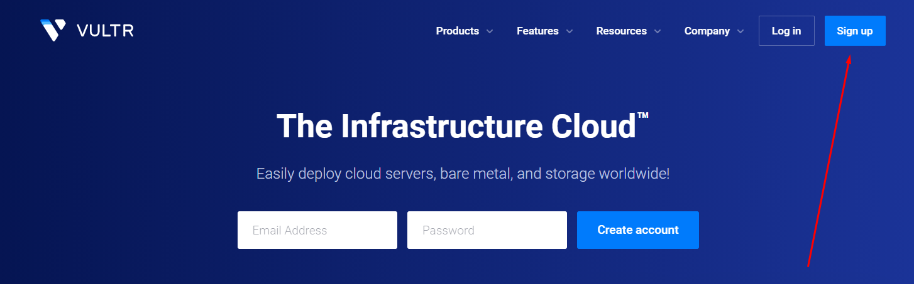
Fill the form, click Create Account:

On the 'Products' page click Plus button:

We need at least 8Gb RAM server with 200 GB SSD, let's chose the closest one:


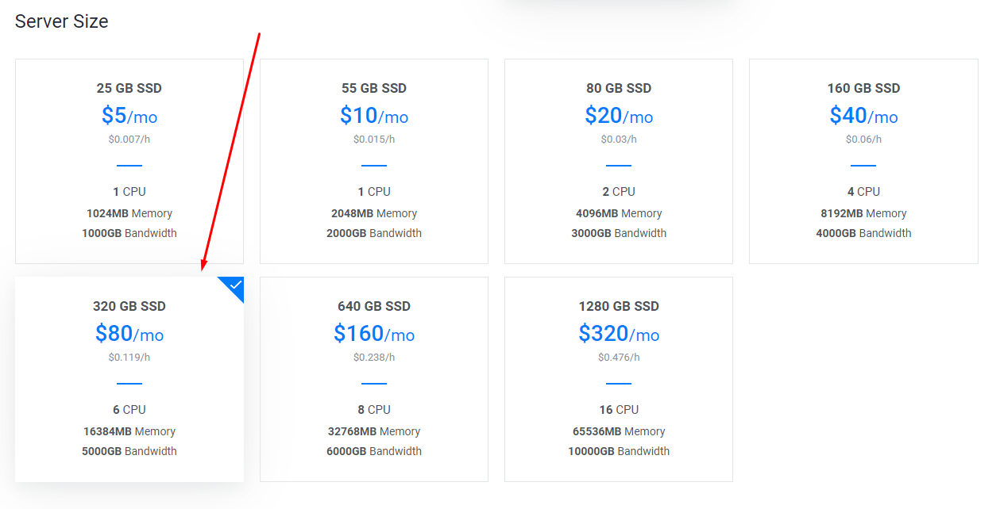
Now let's rent it (hostname can be any), click Deploy Now:
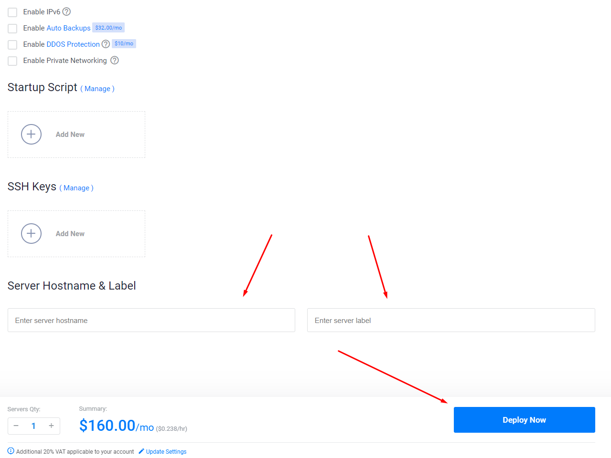
Then click 'Products' at the top left and wait till our server's status is 'Running' (green) and click on the server:

We need the following server data, copy&paste them to notepad:

Now we need to connect to the server, to do this we will use Termius. First of all download and install it.
Open Terminus and click '+New Host' as shown on the screen:

In the following fields we need to type our server data (that we copied from Vultr): IP address, login and pass. You can type anything in 'Label' field - this is just the name of the server for your convenience.
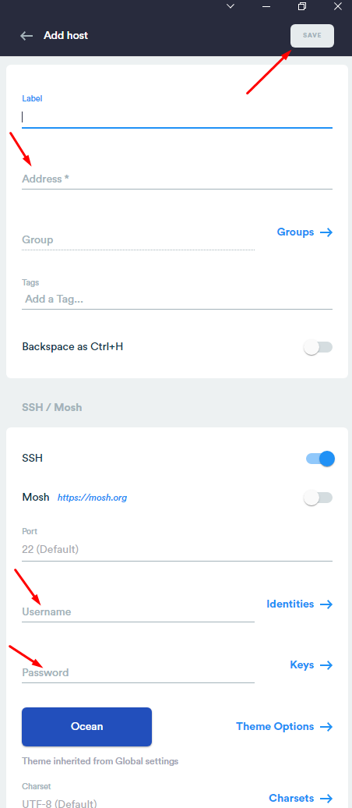
Double click on the server, in the pop-up click 'Yes'.
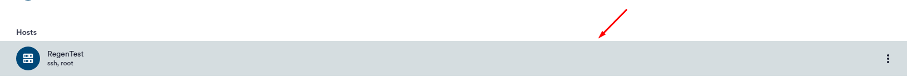
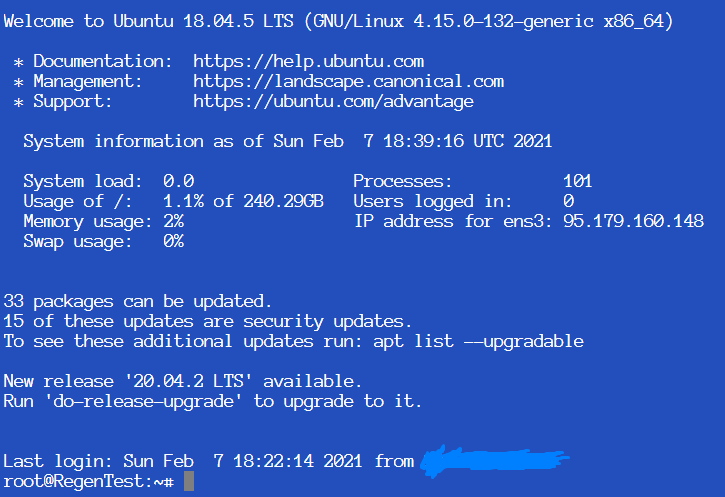
Now we are in, congratulations! So we can continue.
Registation
Go to the site, click Sign Up
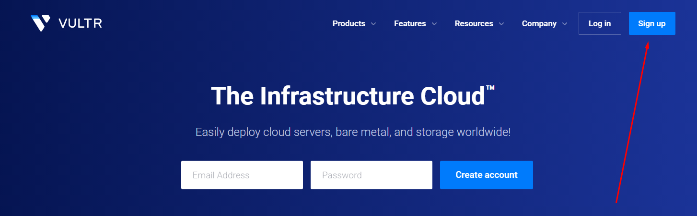
Fill the form, click Create Account:
On the 'Products' page click Plus button:
We need at least 8Gb RAM server with 200 GB SSD, let's chose the closest one:
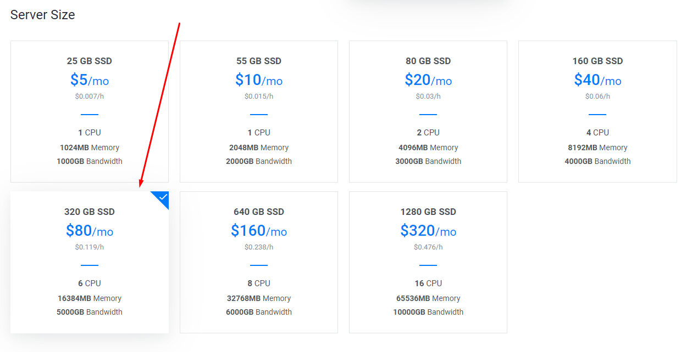
Now let's rent it (hostname can be any), click Deploy Now:
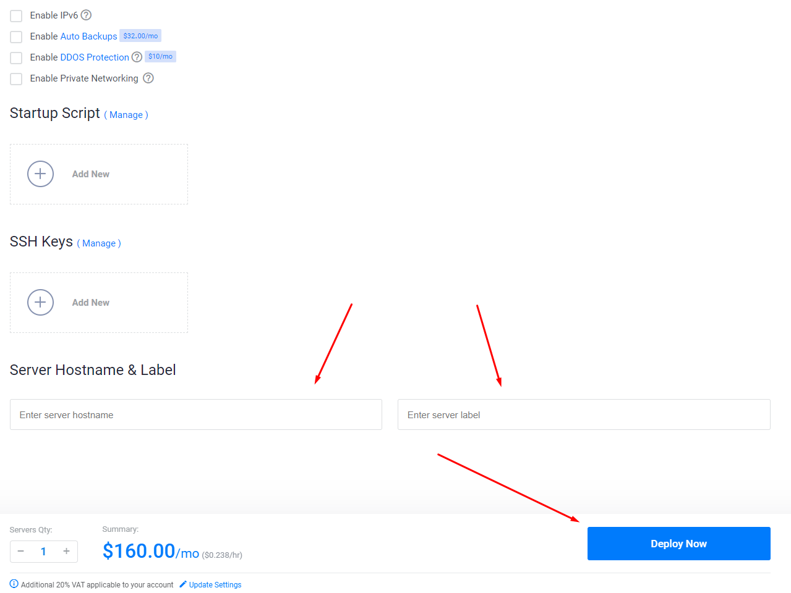
Then click 'Products' at the top left and wait till our server's status is 'Running' (green) and click on the server:
We need the following server data, copy&paste them to notepad:
Now we need to connect to the server, to do this we will use Termius. First of all download and install it.
Open Terminus and click '+New Host' as shown on the screen:
In the following fields we need to type our server data (that we copied from Vultr): IP address, login and pass. You can type anything in 'Label' field - this is just the name of the server for your convenience.
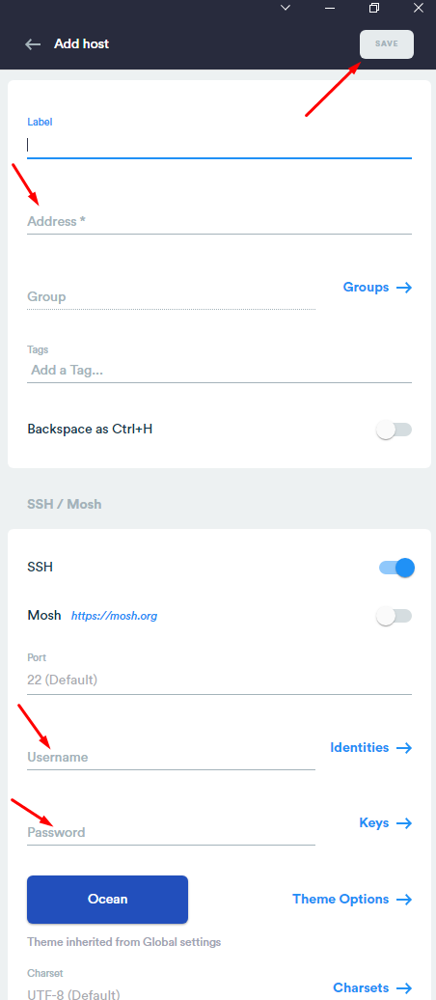
Double click on the server, in the pop-up click 'Yes'.
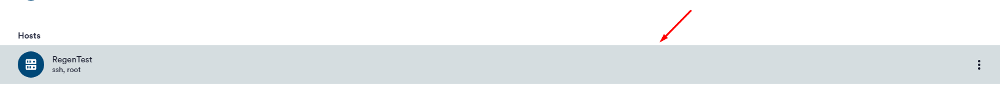
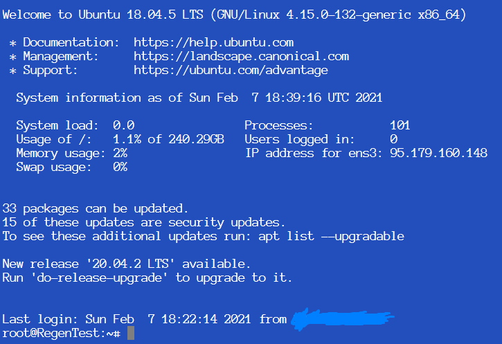
Now we are in, congratulations! So we can continue.
1. Preparing the server
1.1. Installing dependencies
First, we need to install the dependencies, for this we run the following command:
sudo apt-get install build-essential jq screen wget -y
sudo apt-get install build-essential jq screen wget -y
1.2. Installing Go
To compile and then install the node, we need to install Go, we do this with the commands:
wget https://golang.org/dl/go1.15.8.linux-amd64.tar.gz
tar -C /usr/local -xzf go1.15.8.linux-amd64.tar.gz
echo 'export PATH=$PATH:/usr/local/go/bin' >> $HOME/.bashrc
echo 'export GOPATH=/usr/local/go' >> $HOME/.bashrc
source ~/.bashrc
go version
Must be "go version go1.15.8..."
wget https://golang.org/dl/go1.15.8.linux-amd64.tar.gz
tar -C /usr/local -xzf go1.15.8.linux-amd64.tar.gz
echo 'export PATH=$PATH:/usr/local/go/bin' >> $HOME/.bashrc
echo 'export GOPATH=/usr/local/go' >> $HOME/.bashrc
source ~/.bashrc
go version
Must be "go version go1.15.8..."
2. Node set-up
Now we need to compile and install the Regen node, for this we run the following commands:
mkdir -p $GOPATH/src/github.com/regen
cd $GOPATH/src/github.com/regen
git clone https://github.com/regen-network/regen-ledger.git
cd regen-ledger
git checkout v0.6.0
make install
Wait for the process to end the installation process.
mkdir -p $GOPATH/src/github.com/regen
cd $GOPATH/src/github.com/regen
git clone https://github.com/regen-network/regen-ledger.git
cd regen-ledger
git checkout v0.6.0
make install
Wait for the process to end the installation process.
Let's check if everything was installed correctly:
regen version --long | grep "version"
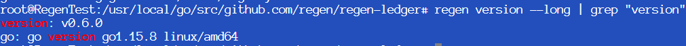
If so, you will see more or less the same as in the screenshot above. If not, repeat the steps above.
regen version --long | grep "version"
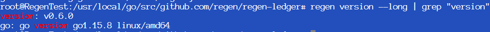
If so, you will see more or less the same as in the screenshot above. If not, repeat the steps above.
3. Генерация ключа
Firstly, we need to prepare the environment; to do this we will do the following in a separate screen and write down the variables that will be used later:
echo 'export REGEN_WALLET=имя кошелька' >> $HOME/.bashrc (если у вас уже есть кошелек - regen keys list)
echo 'export REGEN_MONIKER=имядляноды' >> $HOME/.bashrc (можно любое)
source ~/.bashrc
echo 'export REGEN_WALLET=имя кошелька' >> $HOME/.bashrc (если у вас уже есть кошелек - regen keys list)
echo 'export REGEN_MONIKER=имядляноды' >> $HOME/.bashrc (можно любое)
source ~/.bashrc
In order to become a validator, we need to initialize our node and add keys. To do this, run the following commands:
regen init --chain-id=aplikigo-1 $REGEN_MONIKER
What you will see:

regen keys add $REGEN_WALLET
We enter our password twice, press Enter. Done, now you have the keys.
regen init --chain-id=aplikigo-1 $REGEN_MONIKER
What you will see:
The next step only needs to be performed if you do NOT have a wallet (use regen
keys list - to see the list of your wallets).
If you have a seed phrase, then you can restore your wallet with the following command:
regen keys add $REGEN_WALLET --recover
To create a new wallet use $REGEN_WALLET:If you have a seed phrase, then you can restore your wallet with the following command:
regen keys add $REGEN_WALLET --recover
regen keys add $REGEN_WALLET
We enter our password twice, press Enter. Done, now you have the keys.
Be sure to write down and save the output of this command - using the seed (a set of words in the last line of the command output), you can later restore access to the wallet.
4. Working on the validator
4.1. Creating a validator
At the moment, you cannot create a validator if you have not passed the selection in the testnet, however, you can wait until the crane starts working so that you have a balance that you can stake.
There is NO NEED to execute the command below if you went to the testnet.
To create a validator run the following command:There is NO NEED to execute the command below if you went to the testnet.
regen tx staking create-validator --amount=9000000utree \
--pubkey=$(regen tendermint show-validator) \
--moniker=$REGEN_MONIKER \
--chain-id=aplikigo-1 \
--commission-rate="0.10" \
--commission-max-rate="0.20" \
--commission-max-change-rate="0.01" \
--min-self-delegation="1" \
--gas="auto" \
--from=$REGEN_WALLET
--pubkey=$(regen tendermint show-validator) \
--moniker=$REGEN_MONIKER \
--chain-id=aplikigo-1 \
--commission-rate="0.10" \
--commission-max-rate="0.20" \
--commission-max-change-rate="0.01" \
--min-self-delegation="1" \
--gas="auto" \
--from=$REGEN_WALLET
4.2. Validator set-up
First, we need to load genesis.json file into the Regen config file:
curl https://raw.githubusercontent.com/regen-network/testnets/master/aplikigo-1/genesis.json > $HOME/.regen/config/genesis.json
curl https://raw.githubusercontent.com/regen-network/testnets/master/aplikigo-1/genesis.json > $HOME/.regen/config/genesis.json
Now we need to add seeds and persistent_peers to the config file.
To do this, open the configuration file:
nano $HOME/.regen/config/config.toml
We look for the lines seeds and persistent_peers, set the following values:
seeds = "9082e4d408b0794f884f8c1733d7d11ffb010e38@161.35.51.84:26656"
persistent_peers = "35d64042e1a5f6466b2b1540fa2e859dfc49666e@public-rpc1.regen.vitwit.com:26656,9082e4d408b0794f884f8c1733d7d11ffb010e38@161.35.51.84:26656"
Press Ctrl + X, then Y. Final result:

To do this, open the configuration file:
nano $HOME/.regen/config/config.toml
We look for the lines seeds and persistent_peers, set the following values:
seeds = "9082e4d408b0794f884f8c1733d7d11ffb010e38@161.35.51.84:26656"
persistent_peers = "35d64042e1a5f6466b2b1540fa2e859dfc49666e@public-rpc1.regen.vitwit.com:26656,9082e4d408b0794f884f8c1733d7d11ffb010e38@161.35.51.84:26656"
Press Ctrl + X, then Y. Final result:
All is rest is to set the minimum gas price, to do this we'll open another configuration file with the command below:
nano $HOME/.regen/config/app.toml
Search for the minimum-gas-prices, set the value:
minimum-gas-prices = "0.025utree"
Press Ctrl + X, then Y. Final result:

nano $HOME/.regen/config/app.toml
Search for the minimum-gas-prices, set the value:
minimum-gas-prices = "0.025utree"
Press Ctrl + X, then Y. Final result:
5. Running the Node
5.1. Running by Default
In order to start the node, run the following command:
screen -S regen_node
regen start
To exit the screen, press Ctrl + A, then D. In the screen with the running node, you should see:
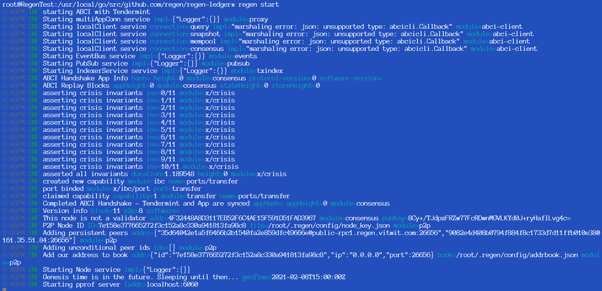
Check the status with the command:
regen status
screen -S regen_node
regen start
To exit the screen, press Ctrl + A, then D. In the screen with the running node, you should see:
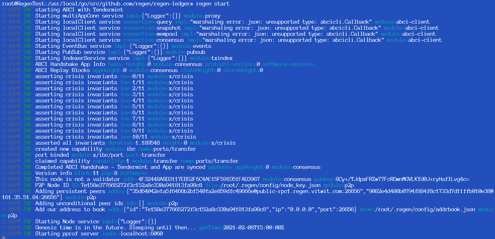
Check the status with the command:
regen status
5.2. As a Service
We create regen as a service with the following commands:
echo "[Unit] Description=Regen Node After=network-online.target [Service] User=${USER} ExecStart=${GOBIN}/regen start Restart=always RestartSec=3 LimitNOFILE=4096 [Install] WantedBy=multi-user.target " >regen.service
sudo mv regen.service /lib/systemd/system/
sudo systemctl daemon-reload
sudo systemctl enable regen.service
sudo systemctl start regen.service
echo "[Unit] Description=Regen Node After=network-online.target [Service] User=${USER} ExecStart=${GOBIN}/regen start Restart=always RestartSec=3 LimitNOFILE=4096 [Install] WantedBy=multi-user.target " >regen.service
sudo mv regen.service /lib/systemd/system/
sudo systemctl daemon-reload
sudo systemctl enable regen.service
sudo systemctl start regen.service
Check the status with the command:
regen status
Check logs with:
sudo journalctl -u regen -f
Congratz, the node is online!
regen status
Check logs with:
sudo journalctl -u regen -f